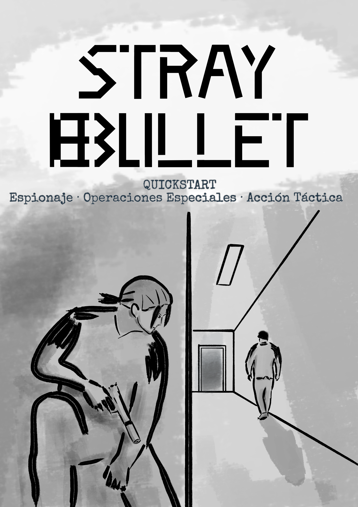

Stray Bullet es un juego de rol de mesa inspirado en obras como Metal Gear, James Bond y The Rock, y ambientado en la ficción de la Guerra Fría de los años 60.
Infíltrate en instalaciones enemigas, roba información, manipula contactos y sobrevive a misiones donde un solo error puede comprometerlo todo.
El Quickstart contiene todo lo necesario para jugar tu primera operación.
DESCARGAR EL QUICKSTART